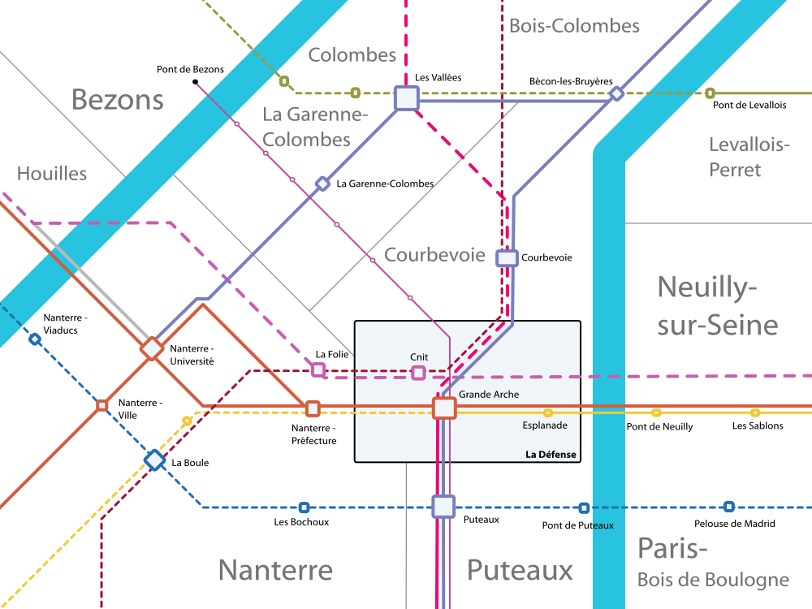

Nanterre-La Défense
Communes de Puteaux, Courbevoie, La Garenne-Colombes, Nanterre


 Le grand pole d'affaire de l'ouest de Paris.
Le grand pole d'affaire de l'ouest de Paris.
L'ensemble urbain de la Défense est le quartier d'affaire style New-Yorkais de l'agglomération parisienne. C'est l'un des plus grands bassin d'emplois de l'Île-de-France. Même s'il est actuellement très bien desservi par les transiliens L et U, le RER A le métro 1 et le T2, les infrastructures de transports sont toutes à saturation et connaissent de grand problèmes de fiabilité.
Avec l'extension du RER E vers Mantes-la-Jolie et la création du métro 15 ces problèmes devraient être résolus partiellement.
Le plan Ile-de-France propose en complément l'extension du transilien U à Argenteuil, l'extension du métro 1 vers Louveciennes et l'extension de la ligne 2 vers Mareil-Marly via Puteaux.
L'extension de la ligne 3 vers Franconville et la création de la branche sud-ouest du RER E devraient contribuer à diminuer le flux de voyageurs qui ne font que transiter par la gare de la Défense pour un plus grand confort de tous.
Carte
{kind=link}

Cliquer pour agrandir